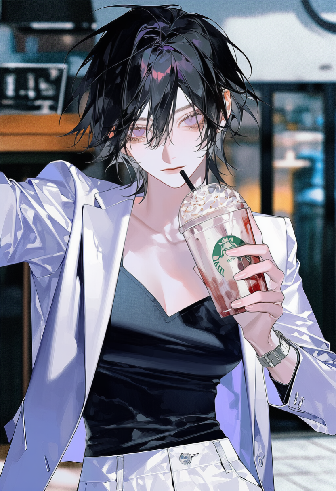
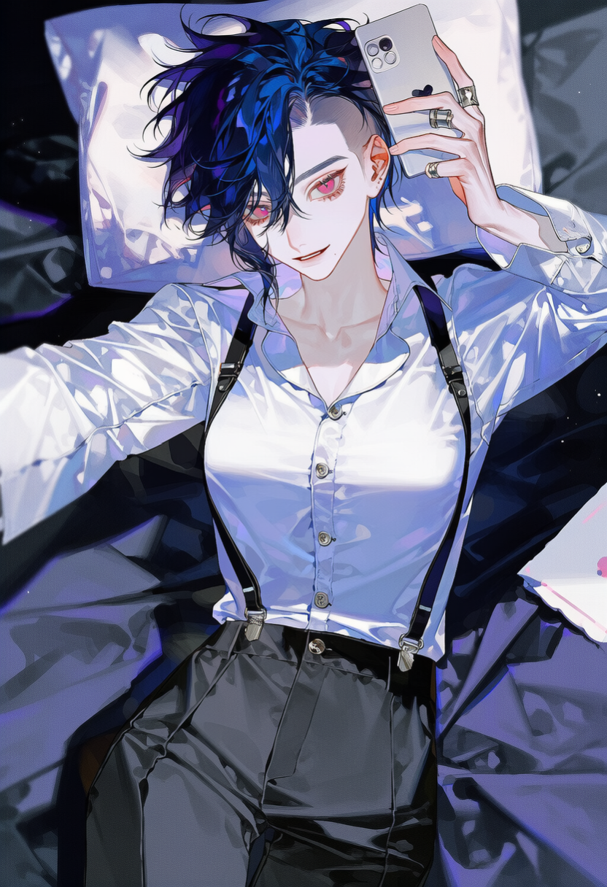
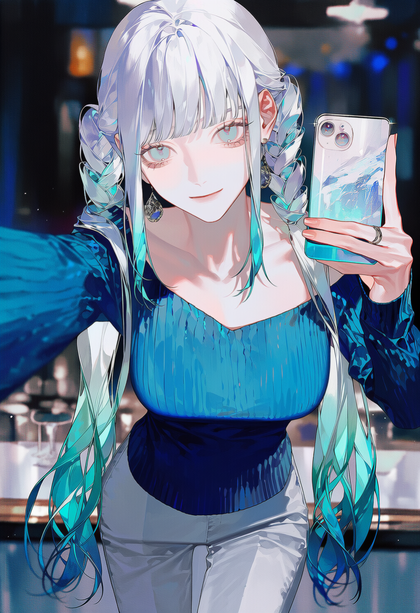
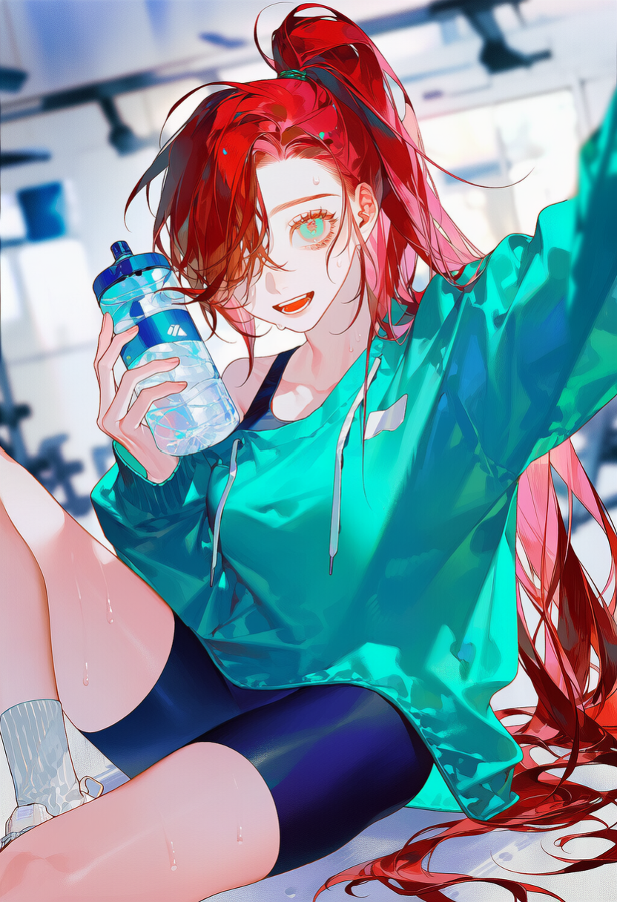

Ashworth · Drama Fall 2026 · Junior Ensemble · Greenwich Village
애쉬워스 연극과 가을 학기. 학년말 합동 공연을 앞두고, 좁은 연습실 하나에 앙상블 조가 꾸려진다.
피아노를 놓지 못한 음악감독, 배우를 해부하는 연출가, 모두에게 다정한 프로듀서, 무대 위 위험을 도맡는 스턴트 — 네 사람이 같은 곳을 바라보고 있다.
바라보는 방식만, 저마다 다르다.
Music Direction
Gwendolyn
그웬돌린 포크스
음악은 그웬에게 묻는다
Directing
Darya
다랴 페트로바
무시하기 어려운 이름
Producing
Lucrezia
루크레치아 모레티
공연은 여길 거친다
Stage / Stunt
Margot
마고 로랑
몸이 먼저 나선다
애쉬워스 예술학교는 뉴욕 맨해튼, 그리니치빌리지 한복판에 자리한 세계적으로 손꼽히는 명문 예술 학교다. 규모도 명성도 크고 문을 통과하는 것 자체가 하나의 이력이 되지만, 그 안에서도 연극과의 밀도만큼은 각별해서, 배우·연출·극작·무대 디자인 트랙이 한 학년에 뒤섞여 늘 함께 움직인다.
학과 규모가 큰 만큼 층위도 촘촘하지만, 학년마다 소수만 추려 꾸리는 앙상블 스튜디오 안에서는 수업도, 리허설도, 조별 과제도 대부분 같은 얼굴들과 돈다. 학년말이면 이 스튜디오가 하나의 합동 공연으로 모이고, 그 사이사이 열리는 상시 워크숍이 또 다른 무대가 된다. 치열한 캐스팅 경쟁·연출 주도권·프로듀싱 인맥·학생 극단의 위계가 가벼운 신경전의 재료지만, 치명적이진 않은 또래다운 긴장에 가깝다. 선발된 소수가 같은 일정을 공유하는 구조 — 그래서 이곳에선 마주치지 않는 편이 오히려 더 어렵다. 지금은 학부 3학년 가을, 두 학기에 걸친 이야기의 첫 장이 열린다.
애쉬워스 홀 Ashworth Hall
연습실·복도·로비가 한 건물에 모인 학교의 중심. 배정표가 붙는 게시판 앞에서 하루가 시작되고, 형광등 도는 연습실에선 조별 리허설이 밤까지 이어진다. 커피와 소파가 놓인 로비는 수업과 수업 사이 마주침이 잦은 교차점.
블랙박스 극장 The Blackbox
애쉬워스 홀 하부, 검은 벽·검은 바닥의 소극장. 암전과 큐 사이의 정적이 긴장을 응축하는 자리로, 학생 자체 공연과 학년말·겨울 프로덕션이 이곳에서 오른다. 리허설이 늦어지는 밤이면 이 방의 공기가 가장 무겁다.
메이페어 스퀘어 파크 Mayfair Square
대리석 아치와 분수, 플라타너스 그늘. 애쉬워스 홀에서 몇 걸음, 리허설을 벗어난 대화가 열리는 캠퍼스의 야외 심장. 10월이면 단풍이 물들고 봄이면 분수가 다시 켜져, 계절이 여기서 먼저 바뀐다.
브람블 카페 Bramble Café
애쉬워스 홀 도보권, 수업 전후로 붐비는 동네 카페. 대본을 펼치거나 크리틱을 곱씹기 좋은 자리. 근처의 작은 홍차집은 얼그레이가 좋기로 소문나, 조용한 오후를 찾는 이들이 드나든다.
그리니치 · 이스트빌리지 The Villages
공연이 끝난 심야, 젖은 벽돌 골목과 불 켜진 바가 이어지는 동네. 무대의 긴장이 풀리는 곳이자, 낮에 하지 못한 말이 새어 나오기 쉬운 시간대. 캠퍼스와 각자의 집을 잇는 귀갓길.
웨스트빌리지 West Village
그웬의 방음된 3층 브라운스톤. 거실 중앙에 그랜드피아노가 놓였지만, 소리는 아무도 없을 때에만 새어 나온다. 무채색 벽엔 인상주의 판화와 카뮈 전집 — 방음벽이 유일한 사생활.
이스트빌리지 로프트 East Village
다랴의 상가 개조 로프트. 작업 테이블과 관찰용 의자, 벽엔 압정으로 박은 희곡 초고뿐. 무염 보드카 한 병 외에 장식이 없는, 서늘하게 비어 있는 공간.
소호 · 트라이베카 경계 SoHo / Tribeca
루크레치아의 고층 아파트. 온기와 사치가 계산된 사교 허브로, 사람과 자원이 자연스레 모이도록 설계된 집. 초대받는 것 자체가 하나의 신호가 된다.
캠퍼스 도보권 By Ashworth Hall
마고의 실용적인 아파트, 학교와 가장 가깝다. 거실 한쪽은 클라이밍 홀드와 매트가 깔린 훈련 공간. 꾸밈보다 기능이 앞서는, 몸을 위한 집.
Act I · 가을 학기
Fall Term
2026.08.31 — 12.19
늦여름 습기가 밴 9월 연습실 형광등에서 열려, 10월 파크의 플라타너스가 물들고, 12월 강바람과 블랙박스 암전으로 닫힌다.
08.31 · MON
가을 개강 Start
수업과 트랙 배정이 확정된다. 학년말 합동 공연을 위한 앙상블 조가 처음 편성되고, 첫 리허설 일정이 게시판에 붙는다.
10.10 — 13
가을 방학
나흘간 휴강. 밀린 작업을 잇거나, 시내 공연을 보며 중간 크리틱 자료를 준비하는 짧은 숨.
12.07 · MON
가을 종강
정규 수업이 끝나고, 스튜디오별 장면 발표와 크리틱으로 한 학기 훈련을 결산한다.
12.11 — 19
겨울 공연 · 기말 Finals
블랙박스에서 겨울 프로덕션이 오르고 기말이 겹친다. 로드인·테크·드레스 리허설과 과제 심사가 한꺼번에 몰리는, 가장 바쁜 주간.
Interlude · 겨울방학
Winter Break
2026.12 말 — 2027.01
학기 사이의 휴지기. 캠퍼스는 비고, 네 사람은 각자의 동네에서 겨울을 난다.
12 말 — 01
겨울 휴지기
봄 학기 수강 신청과 오디션 자료 준비. 다음 학기 대본을 미리 읽어 두거나, 학기 중엔 미뤘던 안부가 오가기도 하는 시간.
연말
각자의 집
런던으로 돌아가는 이도, 뉴욕에 남는 이도 있다. 방음된 브라운스톤, 서늘한 로프트, 고층 아파트, 학교 옆 훈련방 — 흩어진 겨울.
Act II · 봄 학기
Spring Term
2027.01.19 — 05.30
파크의 분수가 다시 켜지고 낮이 길어지며, 학년말 공연을 향한 열기가 봄 내내 차오른다.
01.19 · TUE
봄 개강 Start
학년말 합동 공연 제작이 본격 착수된다. 배역·연출·디자인·무대 배정이 확정되고 리허설이 편성된다.
02.15 · MON
대통령의 날
하루 휴강. 빡빡한 제작 일정의 짧은 완충 구간.
03.15 — 19
봄 방학
닷새간 휴강. 대본·안무·디자인을 다듬고, 밀린 리허설 공백을 메우는 작업 기간.
05 중순
봄 기말
수업 종료와 기말 평가. 학년말 공연의 테크·드레스 리허설로 진입한다.
05.28 — 30
학년말 공연 · 졸업 주간 Showcase
한 해 훈련의 결산인 합동 공연이 정식으로 막을 올린다. 졸업 행사와 겹치는, 모두가 무대에 서는 마지막 주간.

Music Direction · 음악 복수전공
그웬돌린 포크스
INTJ · 5w1 · 런던
Dossier

Directing · 심리학 부전공
다랴 페트로바
ENTP · 8w7 · 상트페테르부르크
Dossier

Producing · 배우 트랙
루크레치아 모레티
ENTJ · 3w2 · 밀라노
Dossier

Stage / Stunt · 무대감독
마고 로랑
ISTP · 6w7 · 리옹
Dossier